2026
Digital Ecologies of Hope: A Natural History of Emerging Media Futures
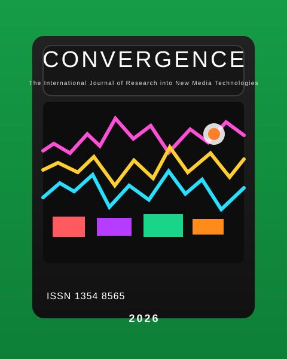
Students' journeys with boundary tools: Comparing home and classroom encounters with a lab experiment
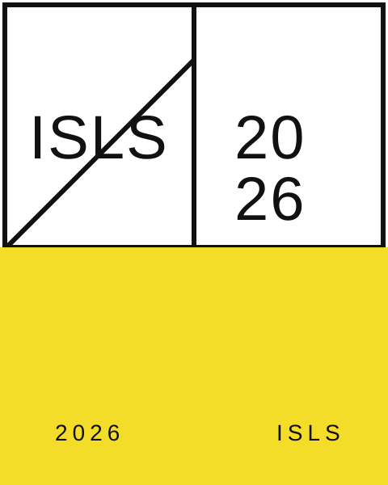
Students' mental models of AI chatbots in inquiry learning: A friend, an instructor, a browser, and a partner
Can Critical Pedagogy Survive Algorithmic Constraints?
A Friend, Instructor, Browser, Partner, or Something Else? Interaction Modes in Student-AI Science Learning Conversation
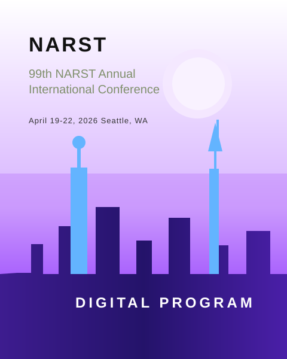
Complex science, simple tools: A pocketable, low-cost lab for sophisticated experiments in middle-school science
Do Anti-democratic Bots Dream of Digital Riots? Modeling Anti-democratic Decision-making and Collective Knowledge Construction Using Natural Language Processing
Learning Sciences in the Global South: Dialogue for multiple ways of knowing and doing
The Laboratory of Hope: Digital Habitats of Persistence and Problem-Solving
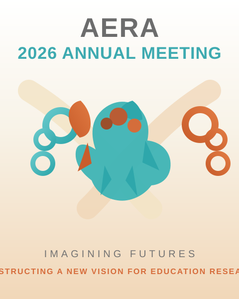
Can paper be a science lab? Designing with 'low-tech' learning tools in high-tech times
2025
What do they want to learn? Student-centered insights on science communication training
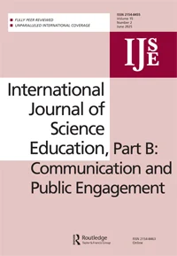
Lab-on-a-Book: A paper-based chemistry kit for hands-on science learning in under-resourced schools
.png)
Co-constructing (twisted) knowledge: Argumentation in far-right YouTube comments on Brazil's war with X's Elon Musk
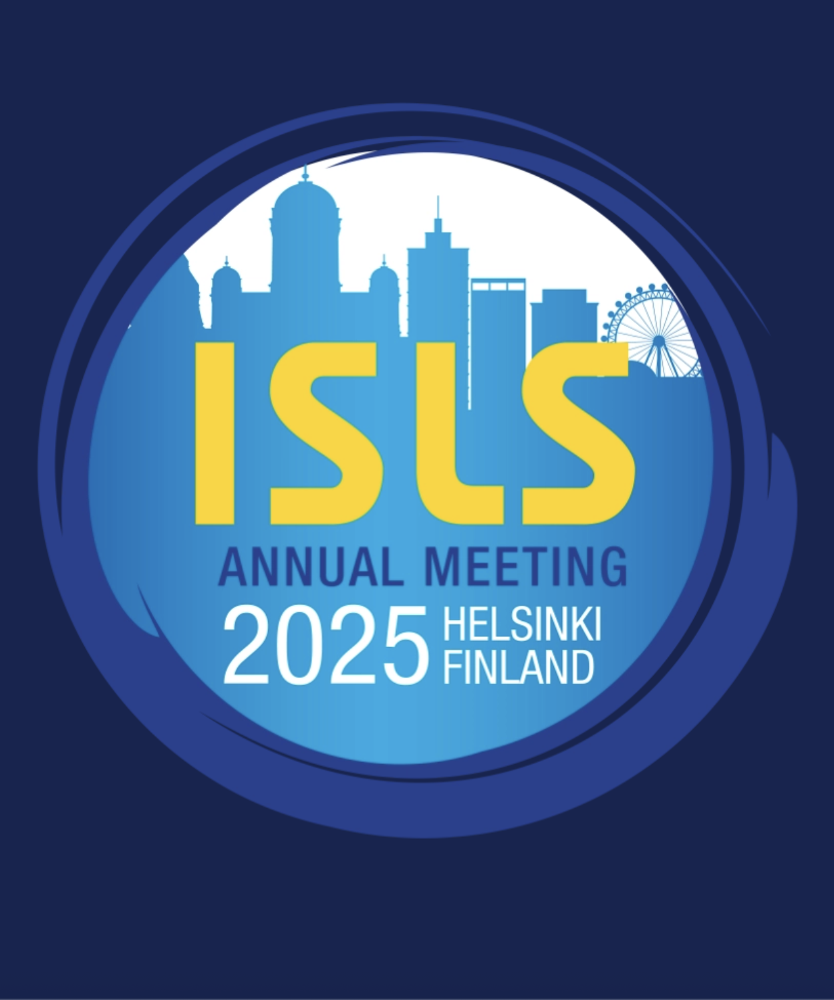
2024
What do students want to learn? Participatory elaboration of a guidebook on science communication for chemistry undergraduates

How can we communicate science? Chemistry students guide

2023
Chemistry students as science journalists: Creating a virtual magazine on COVID-19
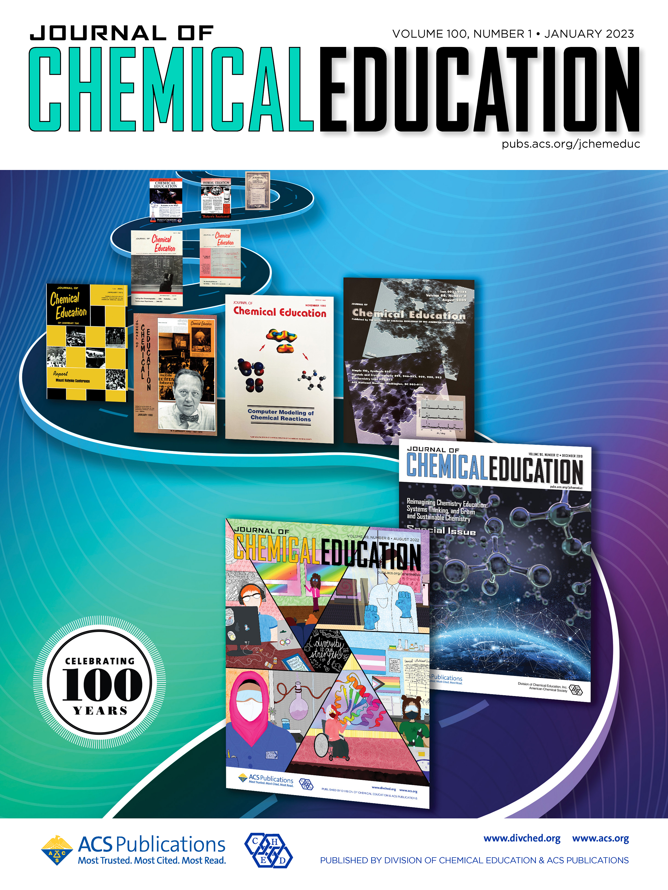
Teaching controversial socio-scientific issues in online exhibits of science museums: COVID-19 on the scene
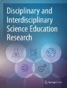
Improving writing skills through scripting a science podcast for non-expert audiences
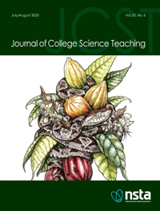
The biochemistry behind COVID-19: Webquest development and application for emergency remote teaching
.jpg)
Case Studies: Approach to Chemistry Education
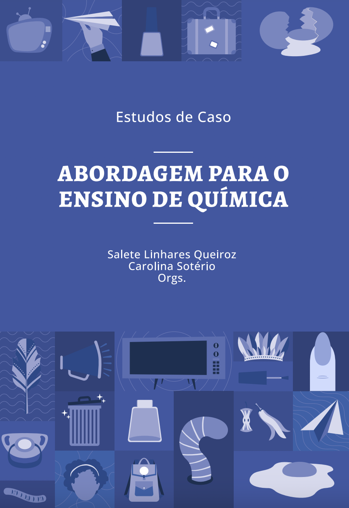
2022
Cooperative and collaborative learning to teach chemical equilibrium to freshman students
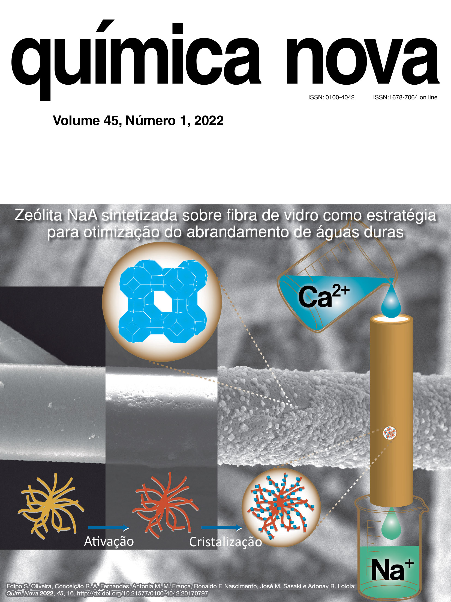
Elaboration of popular science texts on COVID-19 in higher education chemistry: Content analysis in focus
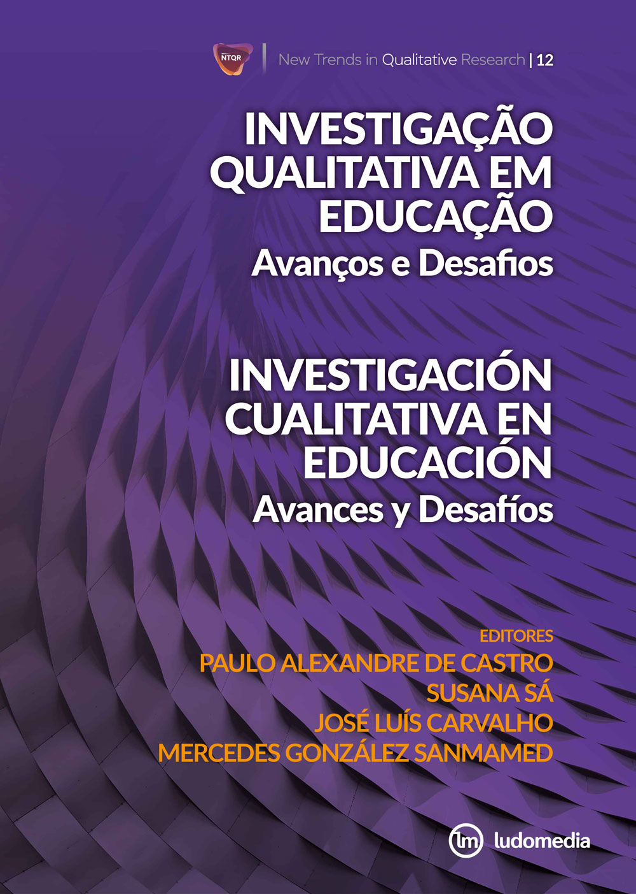
Writing Popular Science Texts on Treatments to Fight Covid-19

Creating Blogs about Chemistry and Covid-19
Analyzing Visual Representation in Brazilian Chemistry Textbooks
2021
The provisional nature of science evidenced in times of pandemic
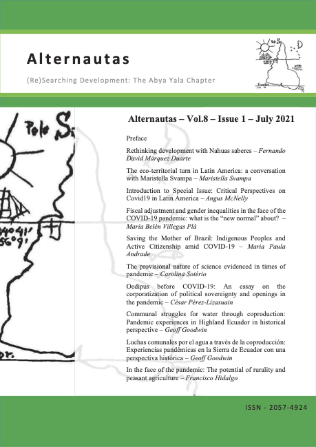
The application of a comic strip, Trinity, in chemistry education
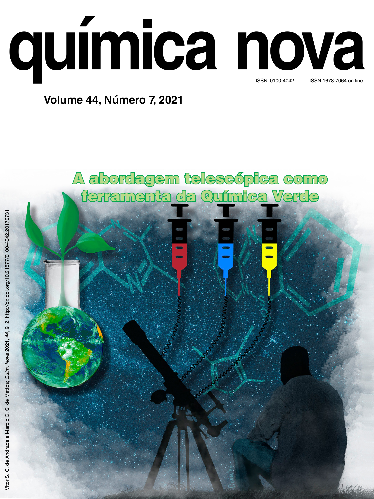
Combining primary chemistry literature and peer-review into a science communication course
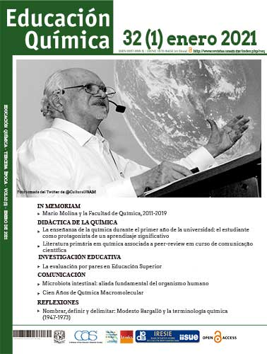
Hands-on an Everyday Chemistry Podcast: The Case of Minuto da Química